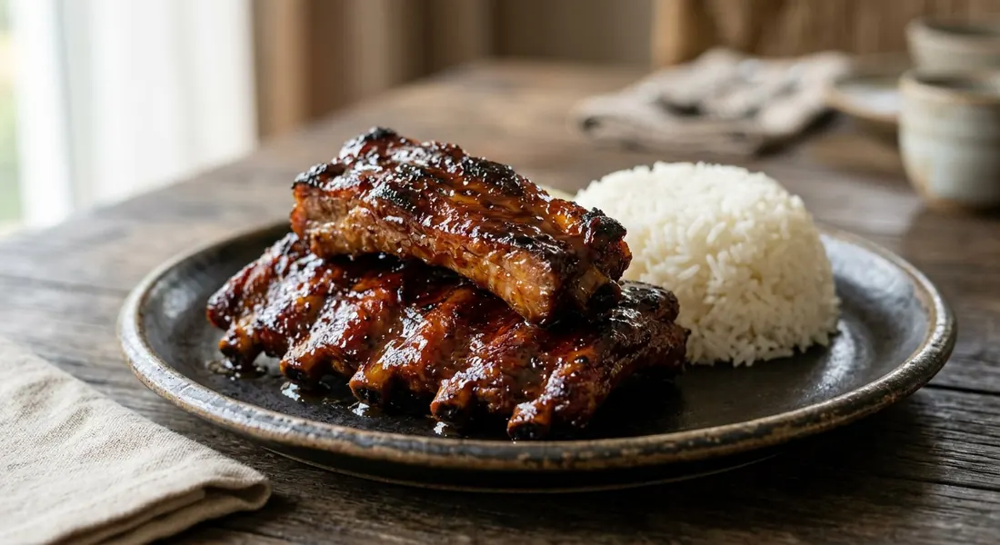

Thai baked pork ribs — baby back ribs simmered until tender in a honey, garlic and soy glaze. No oven needed: the pot does the work, and the sauce reduces to a dark, sticky shine.

ซี่โครงหมูอบ
In Thailand, "op" (อบ) means baked or roasted, but most home versions of sie krong moo op never see an oven. The ribs go into a pot with a dark, sweet-savoury mixture of honey, soy, oyster sauce, garlic and coriander root, and simmer until the liquid cooks down into a lacquer that coats every rib.
It is winter food — Thairath's food column describes it as the dish mothers make on grey days — and it translates perfectly to the UK: cheap cut, one pot, no technique, and a result that looks far more expensive than it is.
| Thai | English | Amount |
|---|---|---|
| ซี่โครงหมูอ่อน | Baby back ribs, cut into individual ribs or short sections | 1kg |
| น้ำผึ้ง | Honey | 2 tbsp |
| น้ำตาลทรายแดง | Brown sugar | 1 tbsp |
| ซีอิ๊วขาว | Light soy sauce | 1 tbsp |
| ซีอิ๊วดำ | Dark soy sauce | 2 tsp |
| ซอสหอยนางรม | Oyster sauce | 2 tbsp |
| ซอสปรุงรส | Seasoning sauce | 1 tbsp |
| รากผักชี | Coriander roots, crushed | 2-3 |
| กระเทียม | Garlic, crushed | 5 cloves |
| พริกไทยเม็ด | Peppercorns | 1/2 tsp |
| วิสกี้ | Whisky or Chinese wine, adds a deep, caramel note | 1 tbsp |
| แป้งสาลี | Wheat flour, helps the glaze cling | 2 tbsp |
| น้ำ | Water | 4 cups |
What makes this dish is the end-stage reduction. Once the water is gone, the sugars left in the pot — honey, brown sugar, the caramel in the dark soy — coat the ribs and set into a sticky shine. This is why the recipe insists on staying with the pot for the last few minutes: a burned glaze is bitter and unrecoverable.
Thai sources split into two camps. The honey version (nam pueng) is the classic; the red sauce version (nam daeng), made with ketchup and chilli sauce, is the street-stall version. Both are below — same method, different glaze.
This recipe is translated from the following Thai-language sources. Where they disagree, we've said so.
1. Golden Mountain Sauce — sie krong moo op nam pueng by Chef Pom — https://www.goldenmountainsauce.com/menu-detail.php?id=208
2. Wongnai — sie krong moo op nam daeng by OPORRY — https://www.wongnai.com/recipes/ugc/fb3b28749b874d8795e25720ac744e8a
3. Thairath Plus — sie krong moo op (food memoir column) — https://plus.thairath.co.th/topic/everydaylife/102456